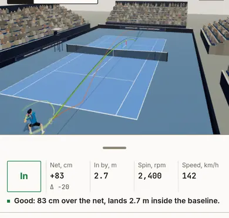
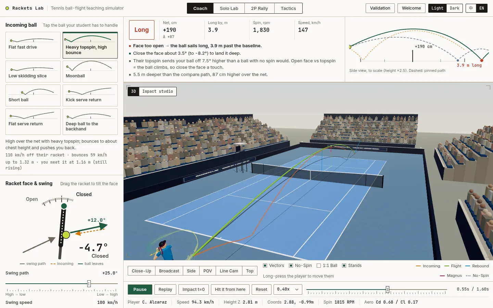

Show your players what the racket face does to the ball.
Pick the ball coming at them: a heavy topspin kicker, a skidding slice, a 190 km/h serve. Tilt the racket face, change the swing path, and Rackets Lab flies the shot. Over the net and deep, long, or into the tape.
- −12.7° closed: into the net
- −7.7° deep: 51 cm over the net, lands 1.5 m inside the baseline
- −3.7° more open: 5.9 m long
How a lesson runs
-
Pick the incoming ball
Eight balls a player has to handle, from a flat drive below the waist to a moonball that bounces past two metres. Each one is a real simulated shot from the far baseline, so its bounce, speed and spin are what the physics gives, not a sketch.
-
Tilt the face, set the swing
Turn the racket on the dial from closed to open, slide the swing path from high-to-low to low-to-high, set the swing speed. The ball path redraws while the finger moves.
-
Compare and talk it through
The previous path stays as a ghost, or pin one to compare against. The lab reads out net clearance, depth, spin and speed, and says why: “Face too open, the ball sails long. Close it about 3°.” Tap Suggest face for the angle that lands it deep.


Eight balls to practise against
Numbers are for a hard court. Change the surface in the lab and every ball bounces differently.
-
Flat fast drive
Low over the net and fast; it skids through below the waist.
- Off their racket
- 140 km/h, 1,200 rpm topspin
- Bounces
- 87 km/h, up to 0.65 m
- You meet it
- 0.60 m high, 55 km/h, after 0.92 s
-
Heavy topspin, high bounce
High over the net with heavy topspin; bounces to about chest height and pushes you back.
- Off their racket
- 110 km/h, 3,800 rpm topspin
- Bounces
- 59 km/h, up to 1.32 m
- You meet it
- 1.16 m high, 42 km/h, after 1.40 s
-
Low skidding slice
Backspin keeps it low; it skids and stays near knee height.
- Off their racket
- 100 km/h, 2,600 rpm backspin
- Bounces
- 58 km/h, up to 0.49 m
- You meet it
- 0.49 m high, 36 km/h, after 1.34 s
-
Moonball
Slow, very high and deep; the bounce climbs above your head.
- Off their racket
- 82 km/h, 2,300 rpm topspin
- Bounces
- 48 km/h, up to 2.03 m
- You meet it
- 1.80 m high, 26 km/h, after 1.99 s
-
Short ball
Lands near the service line; you step in and hit from inside the court.
- Off their racket
- 68 km/h, 1,500 rpm topspin
- Bounces
- 47 km/h, up to 1.24 m
- You meet it
- 0.96 m high, 28 km/h, after 1.42 s
-
Kick serve return
Second serve wide to the deuce court from a tall server; kicks up to about shoulder height.
- Off their racket
- 160 km/h, 4,400 rpm topspin
- Bounces
- 101 km/h, up to 1.45 m
- You meet it
- 1.45 m high, 59 km/h, after 0.92 s
-
Flat serve return
First serve down the T at 190 km/h; very little time to react.
- Off their racket
- 190 km/h, 900 rpm topspin
- Bounces
- 131 km/h, up to 1.17 m
- You meet it
- 1.17 m high, 72 km/h, after 0.75 s
-
Deep ball to the backhand
Deep topspin into the backhand corner; pushes you behind the baseline.
- Off their racket
- 122 km/h, 2,800 rpm topspin
- Bounces
- 68 km/h, up to 1.05 m
- You meet it
- 0.82 m high, 46 km/h, after 1.13 s
Physics, not guesses
Flight
Gravity, drag and Magnus lift, integrated with RK4 every 2 ms. Drag and lift coefficients follow Štěpánek’s fits for spinning tennis balls.
Racket and court
The strings and the court are rigid-body impacts after Rod Cross: the ball grips or slides, which is where spin comes from. Court bounces are calibrated to the ITF drop test.
Coaching advice
Every sentence the lab says is read off the simulated shot: the face change comes from searching face angles with the same model, and the incoming spin’s effect from running the impact with and without it.
What it leaves out
A centre hit on the strings, the face tilted in the vertical plane only, no player error. The opponent shots are hand-picked. It is a teaching model: trust the direction of every change, not the last centimetre.
Read the validation page: convergence tests, the analytic limit, and checks against published measurements.